Microstrip Coupler
Introduction
This is a microstrip coupler designed over a 20 mil RO4003C using a single section of coupled microstrip lines.
The project files are available here
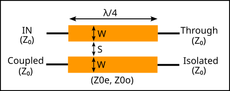
Design Equations
References
David M. Pozar, Microwave Engineering, 4th Edition, 2012. Chapter 7.6
Features
Simple design
Easy to fabricate in microstrip
Good port isolation
Relatively wideband
All ports are matched simultaneously
Warning
High couplings (< 10 dB) require very small gaps.
The coupling depends a lot on the gap, so manufacturing tolerances may have a significant on it.
Large size at low frequencies
Specifications
Feature |
Value |
|---|---|
Band |
[1500, 2800] MHz |
Insertion Loss |
0.3 ± 0.1 dB |
Coupling |
15.5 ± 0.5 dB |
Return Loss |
<-20 dB |
Isolation |
>16 dB |
Design Procedure
1. Ideal Transmission Line Implementation
As a first approach, the coupler is designed with ideal transmission lines by using the design equations. This can be done in Qucs-S using the Qucsator-RF backend.
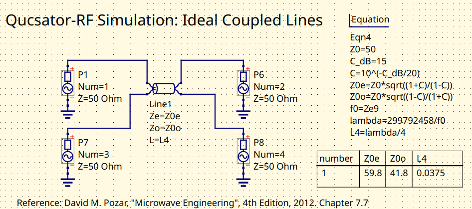
Coupler schematic with ideal transmission lines
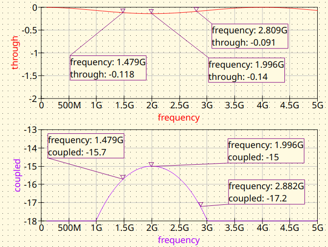
Coupler with ideal transmission lines. Magnitude response
2. Microstrip (MS) Line Implementation
The ideal transmission lines are replaced by microstrip transmission lines. The synthesis can be done with the Transmission Line tool from Qucs-S.
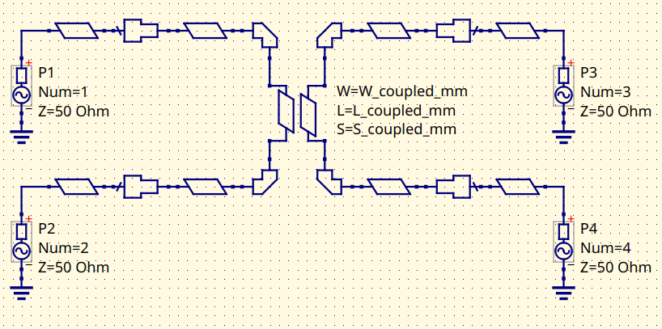
MS Coupler using Qucsator-RF models. Schematic
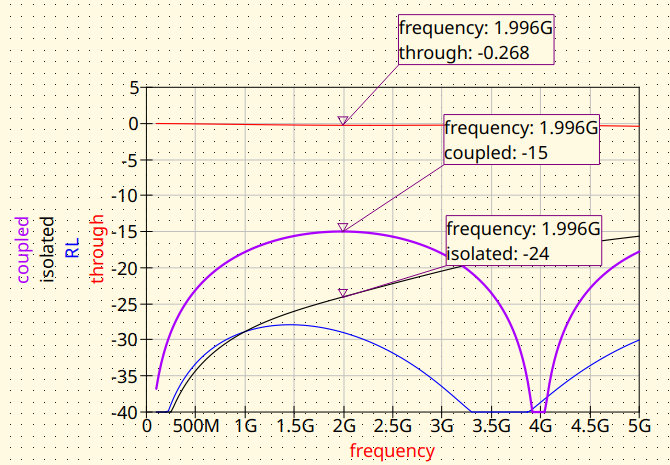
MS Coupler using Qucsator-RF models. Magnitude response
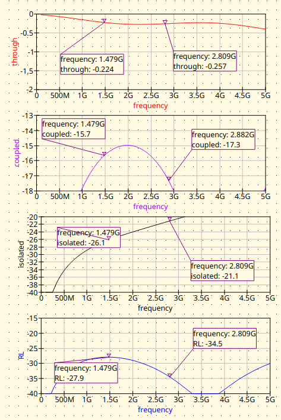
MS Coupler using Qucsator-RF models. Magnitude response (detail)
3. EM Simulation
In order to get more accurate results, it’s a good practice to simulate the design using EM tools. In this cases, two free tools are being considered:
Sonnet Lite. Free, runs well on Wine.
EMerge FEM & open-source. Very nice project. 🔥Check it out!🔥
3.1 Sonnet Line
The model is build on the GUI of Sonnet Lite.
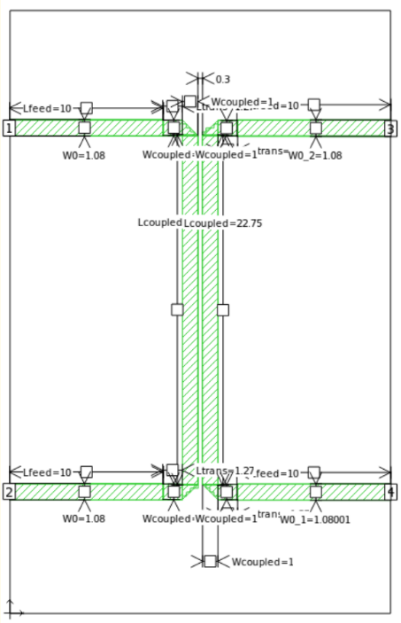
MS Coupler Sonnet Lite modelling
The results obtained were the following:
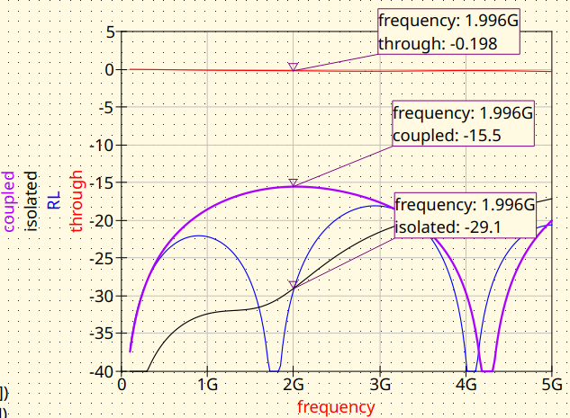
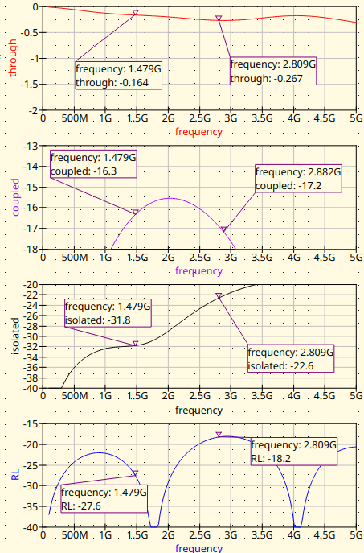
3.2 EMerge
The model is build on a Python script in a very convenient way.
import subprocess # Used to run the post-processing script
import emerge as em
import numpy as np
import time
from datetime import datetime
# ---------------------------------------------------------------------------
# PROJECT NAME
# ---------------------------------------------------------------------------
project_name = "Coupler_15dB"
# Constants
cm = 0.01
mm = 0.001
mil = 0.0254 * mm
um = 0.000001
MHz = 1e6
PI = np.pi
# ---------------------------------------------------------------------------
# Substrate properties
# ---------------------------------------------------------------------------
er = 3.55 # RO4003C relative permittivity
th = 0.508 # [mm] (20 mil) Substrate thickness
tand = 0.0029 # Substrate tand
# ---------------------------------------------------------------------------
# Center frequency
# ---------------------------------------------------------------------------
f0_MHz = 2000;
f0 = f0_MHz*MHz # centre frequency (Hz)
# ---------------------------------------------------------------------------
# Coupler circuital model parameters
# ---------------------------------------------------------------------------
W0 = 1.08 # [mm] Width for 50 ohm line in RO4003C
# Coupled line parameters for 15 dB coupler
L_coupled = 22.75 # [mm] Quarter wavelength at center frequency
W_coupled = 1.0 # [mm] Line width for coupled section
S_coupled = 0.3 # [mm] Gap between coupled lines
# Feed line lengths
L_feed = 10.0 # [mm] Lenght of the input/output feed lines
L_trans = L_feed / 10 # [mm] Length of the transition
Hair = 10 # [mm] Air box height
# ---------------------------------------------------------------------------
# Simulation setup
# ---------------------------------------------------------------------------
model = em.Simulation(project_name)
model.check_version("2.3.0")
# ---------------------------------------------------------------------------
# Frequency sweep
# ---------------------------------------------------------------------------
f_start = 100*MHz
f_stop = 5000*MHz
n_points = 40
# ---------------------------------------------------------------------------
# Material and PCB layouter
# ---------------------------------------------------------------------------
mat = em.Material(er=er, tand=tand, color="#488343", opacity=0.4)
pcb = em.geo.PCBNew(th, unit=mm, material=mat)
# ---------------------------------------------------------------------------
# Layout
# ---------------------------------------------------------------------------
# Upper trace: left feed → taper → 1st coupled stub entry
pcb.new(0, 0, W0, (1, 0))['p1'] \
.straight(L_feed) \
.straight(L_trans, W_coupled)
x_1st = L_feed + L_trans + W_coupled / 2
x_2nd = x_1st + W_coupled + S_coupled
y_top = W_coupled / 2
y_bot = y_top - L_coupled
# Parallel coupled lines (vertical)
pcb.new(x_1st, y_top, W_coupled, (0, -1)).straight(L_coupled)
pcb.new(x_2nd, y_top, W_coupled, (0, -1)).straight(L_coupled)
# Lower trace: left exit → taper → output feed (Port 2 – Through)
pcb.new(x_1st, y_bot + W_coupled / 2, W_coupled, (-1, 0)) \
.straight(W_coupled / 2) \
.straight(L_trans, W_coupled) \
.straight(L_feed, W0)['p2']
# Lower trace: right exit → taper → output feed (Port 4 – Isolated)
pcb.new(x_2nd, y_bot + W_coupled / 2, W_coupled, (1, 0)) \
.straight(W_coupled / 2) \
.straight(L_trans, W_coupled) \
.straight(L_feed, W0)['p4']
# Upper trace: right exit → taper → output feed (Port 3 – Coupled)
pcb.new(x_2nd, 0, W_coupled, (1, 0)) \
.straight(W_coupled / 2) \
.straight(L_trans, W_coupled) \
.straight(L_feed, W0)['p3']
# --- Compile traces ------------------------------------------------------
stripline = pcb.compile_paths(merge=True)
# --- PCB bounding box and substrate/air volumes -------------------------
pcb.determine_bounds(topmargin=15, bottommargin=15, leftmargin=0, rightmargin=0)
# ---------------------------------------------------------------------------
# Bounding box, dielectric and air
# ---------------------------------------------------------------------------
diel = pcb.generate_pcb(merge=True) # generate_pcb replaces gen_pcb
air = pcb.generate_air(Hair) # generate_air replaces gen_air
# ---------------------------------------------------------------------------
# Modal ports
# ---------------------------------------------------------------------------
p1 = pcb.modal_port(pcb['p1'], width_multiplier=3, height=2 * th) # Input
p2 = pcb.modal_port(pcb['p2'], width_multiplier=3, height=2 * th) # Through
p3 = pcb.modal_port(pcb['p3'], width_multiplier=3, height=2 * th) # Coupled
p4 = pcb.modal_port(pcb['p4'], width_multiplier=3, height=2 * th) # Isolated
# ---------------------------------------------------------------------------
# Solver settings
# ---------------------------------------------------------------------------
model.mw.set_resolution(0.25)
model.mw.set_frequency_range(f_start, f_stop, n_points)
# ---------------------------------------------------------------------------
# Assemble geometry
# ---------------------------------------------------------------------------
model.commit_geometry()
# ---------------------------------------------------------------------------
# Mesh refinement
# ---------------------------------------------------------------------------
model.mesher.set_boundary_size(stripline, 0.75 * mm)
# ---------------------------------------------------------------------------
# Mesh generation and visualisation
# ---------------------------------------------------------------------------
model.generate_mesh()
#model.view(plot_mesh=True)
model.view(plot_mesh=False)
# ---------------------------------------------------------------------------
# Boundary conditions
# ---------------------------------------------------------------------------
port1 = model.mw.bc.ModalPort(p1, 1, modetype='TEM') # Input
port2 = model.mw.bc.ModalPort(p2, 2, modetype='TEM') # Through
port3 = model.mw.bc.ModalPort(p3, 3, modetype='TEM') # Coupled
port4 = model.mw.bc.ModalPort(p4, 4, modetype='TEM') # Isolated
# ---------------------------------------------------------------------------
# Run solver
# ---------------------------------------------------------------------------
start_time = time.time()
data = model.mw.run_sweep(parallel=True, n_workers=8, frequency_groups=8)
run_time = (time.time() - start_time) / 60
print(f"Simulation completed in {run_time:.2f} minutes")
# ---------------------------------------------------------------------------
# Extract S-parameters (raw solver points)
# ---------------------------------------------------------------------------
grid = data.scalar.grid
f = grid.freq
S11 = grid.S(1, 1) # Input match
S21 = grid.S(2, 1) # Through
S31 = grid.S(3, 1) # Coupled
S41 = grid.S(4, 1) # Isolated
# ---------------------------------------------------------------------------
# Vector fitting — supersampled plot
# ---------------------------------------------------------------------------
n_supersamples = 2001
f_fit = np.linspace(f_start, f_stop, n_supersamples)
f_MHz = f_fit / 1e6 # Scale for displaying the graphs
S11_fit = grid.model_S(1, 1, f_fit)
S21_fit = grid.model_S(2, 1, f_fit)
S31_fit = grid.model_S(3, 1, f_fit)
S41_fit = grid.model_S(4, 1, f_fit)
phase_S21 = np.angle(S21_fit, deg=True) # direct output phase
phase_S31 = np.angle(S31_fit, deg=True) # coupled output phase
phase_diff = phase_S21 - phase_S31
# ---------------------------------------------------------------------------
# 3-D field visualisation at f0
# ---------------------------------------------------------------------------
field_mid = data.field.find(freq=f0)
model.display.add_object(diel, opacity=0.2)
model.display.add_object(stripline)
model.display.add_portmode(port1, k0=field_mid.k0)
model.display.add_portmode(port2, k0=field_mid.k0)
model.display.add_portmode(port3, k0=field_mid.k0)
model.display.add_portmode(port4, k0=field_mid.k0)
model.display.animate().add_field(
field_mid.cutplane(0.5 * mm, z=-0.5 * th * mm).scalar('Ez', 'complex'),
symmetrize=True,
)
model.display.show()
# --- Post-process and export Touchstone ----------------------------------
grid = data.scalar.grid
comments = [
f"--- {project_name} ---",
"Substrate: RO4003C",
f"h = {th} mm",
"Design parameters:",
f"W0 = {W0} mm",
f"L_coupled = {L_coupled} mm",
f"W_coupled = {W_coupled} mm",
f"S_coupled = {S_coupled} mm",
f"L_feed = {L_feed} mm",
f"L_trans = {L_trans} mm",
f"Air box height = {Hair} mm",
f"Run time = {run_time:.2f} min",
]
timestamp = datetime.now().strftime("%Y-%m-%d_%H-%M-%S")
file_name = project_name + "_EMerge_" + timestamp
grid.export_touchstone(file_name, custom_comments=comments)
# Save raw arrays for post-processing
np.savez(
project_name + "_data.npz",
f=f_fit, S11=S11_fit, S21=S21_fit, S31=S31_fit, S41=S41_fit, phase_diff=phase_diff,
)
subprocess.run(["python", "Coupler_post.py"], check=True)
This is how the model looks in the 3D viewer:
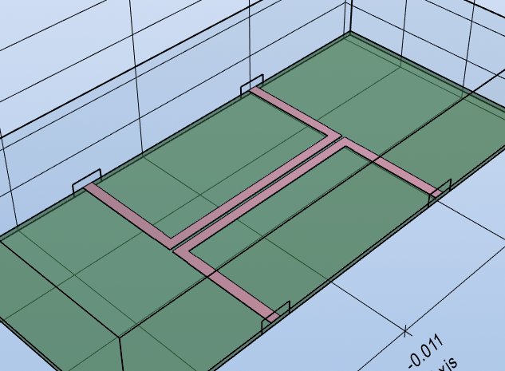
The results are the following:
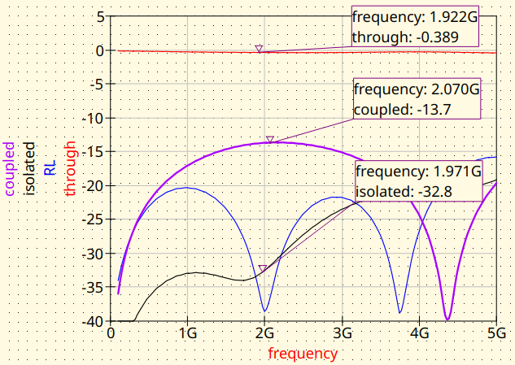
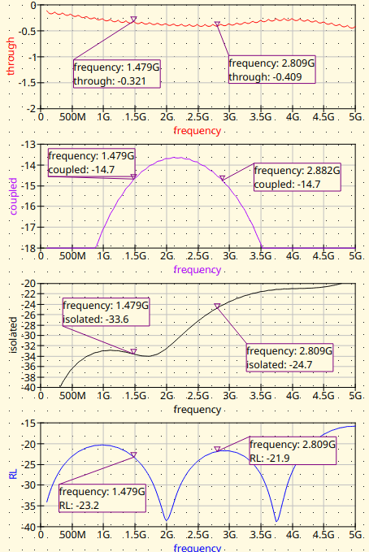
Conclusion
As expected, the results obtained for the three simulators show slight differences. Which of them is the most accurate? It would be interesting to manufacture this coupler and compare this with data from a VNA.
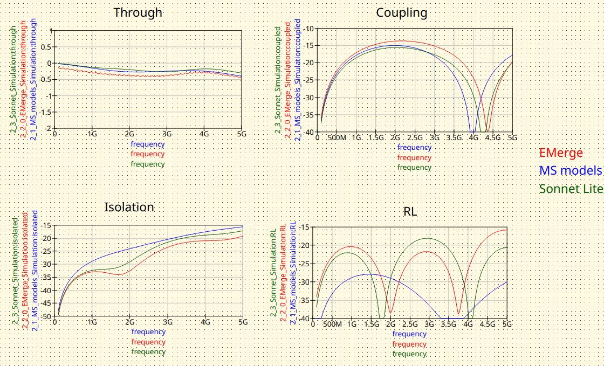